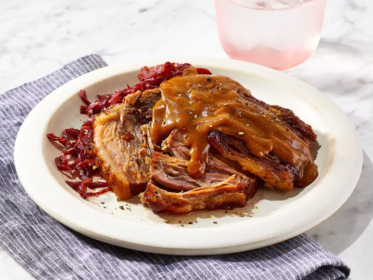

Traditional Sauerbraten

Description
For this sauerbraten, I found two slightly different handwritten versions of my Grandmother's recipe. Born in Nekkar am Rhein in 1904, she naturally learned to cook traditional German meals as a young woman and didn't rely on a cookbook. I try to capture the nuance in this. Serve with potato dumplings.
Ingredients
- 3 pounds beef rump roast
- 2 large onions, chopped
- 1 cup red wine vinegar, or to taste
- 1 cup water
- 1 tablespoon salt
- 1 tablespoon ground black pepper
- 1 tablespoon white sugar
- 10 whole cloves, or more to taste
- 2 bay leaves, or more to taste
- salt and ground black pepper to taste
- 2 tablespoons vegetable oil
- 10 gingersnap cookies, crumbled
Steps
- Place beef rump roast, onions, vinegar, water, 1 tablespoon salt, 1 tablespoon black pepper, sugar, cloves, and bay leaves in a large pot. Cover and refrigerate for 2 to 3 days, turning meat daily. Remove meat from marinade and pat dry with paper towels, reserving marinade.
- Season flour to taste with salt and black pepper in a large bowl. Sprinkle flour mixture over beef.
- Heat vegetable oil in a large Dutch oven or pot over medium heat; cook beef until brown on all sides, about 10 minutes. Pour reserved marinade over beef, cover, and reduce heat to medium-low. Simmer until beef is tender, 3 1/2 to 4 hours. Remove beef to a platter and slice.
- Strain solids from remaining liquid and continue cooking over medium heat. Add gingersnap cookies and simmer until gravy is thickened, about 10 minutes. Serve gravy over sliced beef.